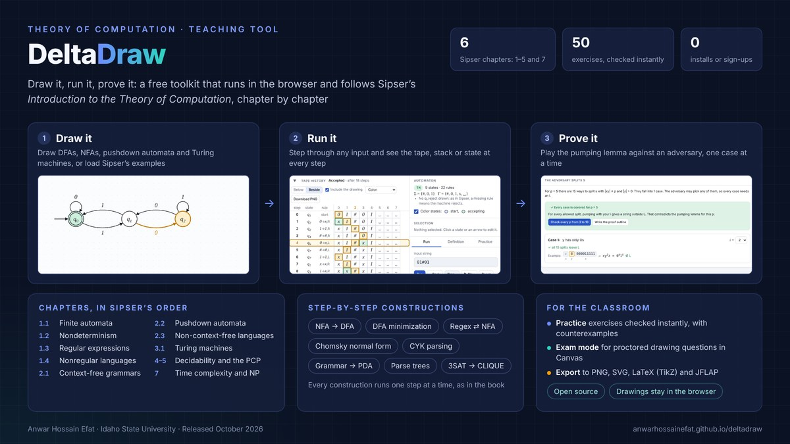

HCISEOpen sourceReleased Oct 2026
DeltaDraw
An interactive toolkit for Theory of Computation
A free, browser-based learning platform organised by the chapters of Sipser’s Introduction to the Theory of Computation. Students draw a machine and watch it compute one step at a time. Nothing to install, no account, and drawings stay in the student’s own browser.
- Draw and run DFAs, NFAs, pushdown automata, and Turing machines, with the input, stack, or tape shown at every step
- Step-by-step constructions: NFA to DFA, minimization, regular expressions and NFAs, Chomsky normal form, CYK, grammar to PDA
- The pumping lemma played as a game against an adversary
- 50 practice exercises checked instantly with counterexamples, plus an exam mode for proctored Canvas exams
- Export to PNG, SVG, LaTeX (TikZ), and JFLAP